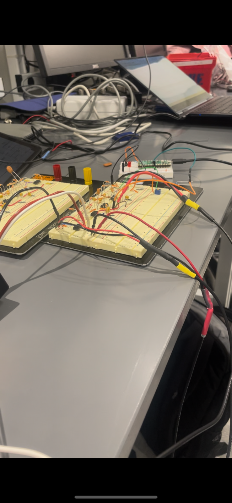
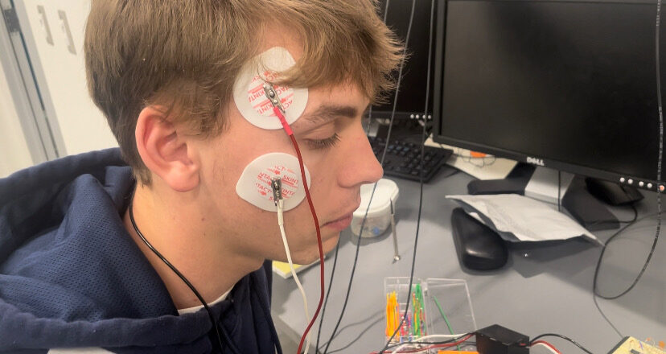

EEG-turned-EMG
complete
We set out to read minds. We got as far as reading faces, which turned out to be the more useful half.
The inspiration was a Michael Reeves video about driving a car with mind control. I wanted to know whether I could build something in that family — specifically, whether we could detect a blink reliably enough to switch on an LED.
We did read alpha waves. The 8–12 Hz band is there, it strengthens when you close your eyes and weakens when you concentrate, and our circuit picked it up. But turning "there is more alpha now" into a clean, instant, per-blink trigger is a different problem, and the blink itself is a muscle firing — a far larger signal than anything happening in the visual cortex. So the electrodes moved to the face and the device became an EMG.

The electronics were ours. Instrumentation amplifiers to pull a differential signal off the body, a bandpass filter for the band we cared about, and notch filters to kill mains hum — which is the loudest thing in the room when you are measuring microvolts. The Pi Pico's ADC will not accept a signal centred on zero, so a level shifter lifts it into range. Then peak detection in software, and an LED that lights the instant you blink.

The final electrode placement was above the eyebrow, on the cheekbone, and behind the ear as a reference. We took the general wiring approach from a DIY guide, then designed our own circuit and wrote our own acquisition and analysis code.

(To add: the circuit diagram, which belongs on this page more than any photograph does — and the video of the LED firing on a blink.)